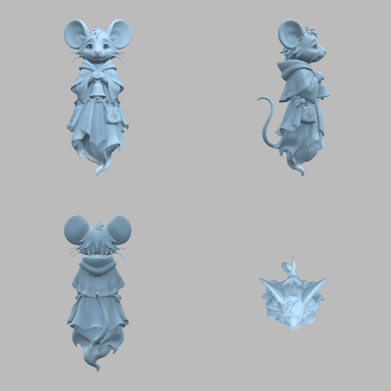

The Wandering Spirit: your export, with a skeleton and the game's float and swirl added by hand. A ghost mouse in pale blue with big round ears and a kind face, a hooded cape with a vine border over a robe, both hands clasped round a small bell, a satchel with a cross at the hip, a long curling tail, and the robe fading into a wisp instead of feet. The First Bell never walks, fights or talks; the spirit floats, bobs and turns, see-through, and when the party gives up its newest relic it swirls up and fades. Press a move to watch it; the numbers under the page come from the model file.
Idle is what the spirit does while the party walks up. The trade plays what happens when the party gives up its newest relic: the swirl, the fade and the embers. It repeats until you press it again, with a short pause between. The hero stand-in waits 1.6 u in front, where the party stands to trade.

It came through as one piece, all in one pale blue: a mouse with big round ears, large soft eyes, whiskers and a tuft of hair, a hooded cape with a vine pattern round its edge over a long robe with a sash and a bow at the back, both hands clasped at the chest round a small bell, a satchel with a cross on it at the right hip, a long thin tail curling up behind, and below the robe a ghostly wisp that ends in a point.
| Move | What it does | Timing |
|---|---|---|
| Idle | The game's idle: the spirit floats off the floor, bobbing up and down and turning a little side to side; its skin is see-through and breathes, and a pale glow sits at its heart. | Game: floating 0.25 u up, the bob 0.12 u on 1.6 rad a second, the turn 0.2 rad on 0.7 rad a second; the skin's opacity 0.5 + 0.08 on 2.3 rad a second. The loop is 27 s, seven bobs and three turns, both rounded to fit. |
| The trade | The game's swirl when the party gives up its newest relic: the spirit rises, spinning, and fades to a quarter; twenty pale embers rise from the floor round it. It stays up there, faded, the bob and turn carrying on. | Game: over 0.9 s it rises 0.6 u, spins 9 rad (about one and a half turns) at an even rate and fades to 25%; the embers from 0.1 to 0.6 u round it, rising 1.2 to 2.6 u a second for 0.6 to 1.1 s. The clip is 2.5 s. |
| What was measured, on every frame of every move | Result |
|---|---|
| Loops that jump when they restart (idle) | 0 |
| Anything into the floor | None: the feet stay where they stand. |
These numbers come from the model file. I checked the poses as still frames only: the cloud machine cannot play the page at full speed, so the float, the swirl and the fade are yours to judge.